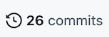
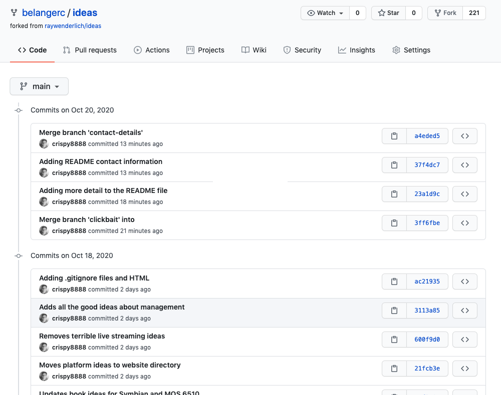
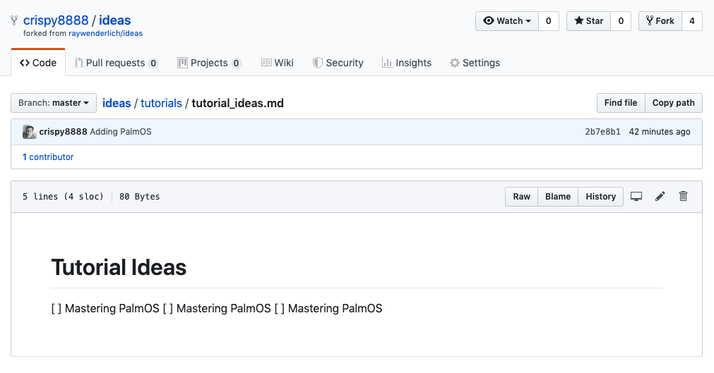
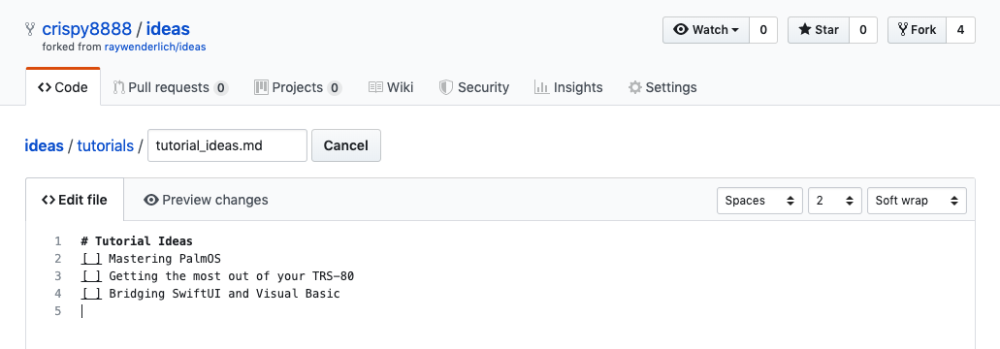
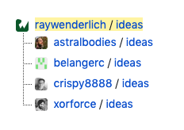

9.与远程同步¶
到目前为止，你几乎都是在自己的本地系统上工作，这并不是说这是件坏事 - 在本地机器上有一个Git仓库可以支持一个健康的开发工作流程，即使你是一个人在工作。
但是，Git真正的优势在于管理分布式的并发开发，而这正是本章的重点。你在自己的机器上做了很多伟大的工作，现在是时候把它推送到远程仓库，并把你的工作与服务器上的内容同步。
有很多理由要在某个地方拥有一个远程版本库，即使你是在自己的工作上。如果你需要恢复你的开发环境，比如在硬盘故障后，或者仅仅是建立另一台开发机器，那么你所要做的就是克隆你的远程版本库到你的干净机器上。
而且，你现在在自己的工作中，并不意味着你不会一直想自己维护这个代码库。在未来，你可能需要另一个维护者来维护你的项目，或者你可能想把你的代码完全开源化。有一个远程托管的资源库可以让你轻而易举地做到这一点。
推送你的改动¶
在Git中，很多事情和生活一样，都取决于你的视角。在同步本地仓库和远程仓库时，Git有一套视角标准。Pushing是指将本地的修改放到服务器上，而pulling是指将服务器上的任何修改拉到本地的克隆仓库中。
所以你已经准备好推送你的改动了，这给你带来了下一个Git命令，很方便地命名为git push。
执行下面的命令，把你的改动推送到服务器上：
git push origin main
这告诉Git从main分支中获取修改，并将你的修改同步到远程仓库（origin）。你会看到类似以下的输出：
Enumerating objects: 50, done.
Counting objects: 100% (46/46), done.
Delta compression using up to 16 threads
Compressing objects: 100% (31/31), done.
Writing objects: 100% (36/36), 3.39 KiB | 579.00 KiB/s, done.
Total 36 (delta 17), reused 2 (delta 1), pack-reused 0
remote: Resolving deltas: 100% (17/17), completed with 4 local objects.
To https://www.github.com/belangerc/ideas.git
c470849..f5c54f0 main -> main
Git在这条信息中给了你很多输出，但基本上它告诉你一些关于它所做的高层次的信息，在这里。它把你本地仓库的17个变更项同步到了远程仓库。
Note
想知道为什么Git在这里没有提示你提交信息？这是因为推送并不是真正的*提交；你所做的是要求Git将你的修改同步到远程仓库。你是在把你的提交与远程仓库中已有的提交结合起来，而不是在远程仓库中已有的提交的基础上创建新的提交。
想看看你的改动的效果吗？请到GitHub上你的仓库的URL去看看。如果你忘了那是什么，你可以在git push命令的输出中找到它。在我的例子中，它是https://www.github.com/belangerc/ideas，但你的用户名会有所不同。
在那里，点击页面顶部的26 commits链接：

你会看到你在远程版本库中的所有同步修改的列表，你应该能认出你在本地版本库中的提交：

这就是同步舞蹈的一半。不出所料，git push的阴阳两面是。git pull。
拉动变化¶
拉取改动几乎是推送的反面情况；Git把远程repo上的提交整合到你的本地提交中。
当你自己在一个项目上工作时，这种操作是非常直接的；你从仓库中拉出最新的修改，而且，很有可能，远程的修改会一直与你的本地同步，因为除了你，没有其他人可以做任何修改。
但更常见的情况是，你会在同一个版本库中和其他人一起工作，他们会自己推送修改到版本库中。所以大多数时候，你不能把你的修改推送到一个未被触及的版本库上，你必须在推送本地修改之前，把远程的修改拉到你的版本库中去，从而整合这些修改。
为了说明这一点，也为了说明git pull对你的仓库的实际作用，你将模拟这样一个场景：别人对main分支做了修改，并在你有机会推送你的修改之前推送了他们的修改。你会看到Git是如何应对这种情况的，你也会学到解决这个问题所需的步骤，看看如何解决这个问题。
将遥控器向前移动¶
首先，你要模拟别人在远程进行修改。导航到GitHub上你的仓库的主页：https://github.com/<username>/ideas。在那里，点击你的项目的tutorials目录链接，然后点击tutorial_ideas.md，在浏览器中查看。

点击页面上的edit图标（小铅笔图标），GitHub会为你打开一个基本编辑器。

在编辑器中的tutorial_ideas.md中添加以下想法：
[ ] Blockchains with BASIC
然后，向下滚动到编辑器下方的Commit changes部分，在该部分的第一个字段中添加你选择的提交信息，将单选按钮的选择保留为Commit directly to the main branch，然后点击Commit changes。
这将在远程仓库现有的main分支上创建一个新的提交，就像开发团队的其他人从本地系统推送提交一样。
现在，你要对本地版本库中的一个不同文件进行修改。
回到你的终端程序，编辑books/book_ideas.md，在文件的底部添加以下一行：
- [ ] Debugging with the Grace Hopper Method
保存你的修改并退出。
阶段性的改变：
git add books/book_ideas.md
现在，在你的本地版本库上创建一个提交：
git commit -m "Adding debugging book idea"
现在你在本地main分支的头部有一个提交，在远程main分支的头部也有一个不同的提交。现在你想把这个改动推送到远程。这很容易。只要像平时一样执行git push命令即可：
git push origin main
Git不屑一顾，并向你返回以下信息：
! [rejected] main -> main (fetch first)
error: failed to push some refs to 'https://www.github.com/belangerc/ideas'
hint: Updates were rejected because the remote contains work that you do
hint: not have locally. This is usually caused by another repository pushing
hint: to the same ref. You may want to first integrate the remote changes
hint: (e.g., 'git pull ...') before pushing again.
hint: See the 'Note about fast-forwards' in 'git push --help' for details.
好吧，这没有达到预期效果。Git有时会给出相当有用的提示；在这种情况下，它告诉你，它在远程检测到了你本地没有的改动。由于你可能想在推送前确保本地的改动与远程的改动相一致，所以你要把这些改动拉到本地系统中。
执行下面的命令，把远程的修改拉到本地：
git pull origin
哦，糟糕，Git打开了Vim，这意味着它正在创建一个提交；在这种情况下，它正在创建一个合并提交。为什么，Git，为什么？
Merge branch 'main' of https://github.com/belangerc/ideas into main
# Please enter a commit message to explain why this merge is necessary,
# especially if it merges an updated upstream into a topic branch.
#
# Lines starting with '#' will be ignored, and an empty message aborts
# the commit.
你很快就会发现Git在做什么，但先完成这个提交，让Git继续做它正在做的事情。Git已经为你自动创建了一条提交信息，所以你不妨接受它，并在以后尝试弄清楚这一团糟。按:，然后输入wq，再按Enter，保存这个提交信息并退出Vim。
你会回到命令提示符下，所以执行下面的命令，看看Git为你做了什么：
git log --oneline --graph
你会看到与下面类似的东西：
* b495cc8 (HEAD -> main) Merge branch 'main' of https://github.com/belangerc/ideas
|\
| * 35054cc (origin/main, origin/HEAD) Update tutorial_ideas.md
* | 8648645 Adding debugging book idea
|/
* a4eded5 Merge branch 'contact-details'
.
.
.
Note
想知道在树状图中那些星号（``*）是什么意思？因为来自不同分支的提交都是叠加在一起的，星号只是告诉你这个提交是在哪个分支上进行的。在这个例子中，你可以看到这本书的创意是在一个分支（本地的main分支）提交的，而另一个提交是在远程的原分支上创建的。
向上看，你有一个共同的祖先：a4eded5 Merge branch contact-details。然后你有8648645的提交，这是你在本地仓库的提交，接着是35054cc，你在GitHub仓库页面的远程提交。还有，顶部有b495cc8合并分支'main'的内容。而且也，Git显示你的远程更新tutorial_ideas.md在一个分支上。但你并没有创建一个分支。你在GitHub编辑页面上选择了直接提交到main的选项。这是从哪里来的？
Note
正是这样看似简单的场景--对不同文件的非冲突性修改导致了合并提交--导致刚接触Git的人举起手说："什么玩意，Git？"
这就是为什么在命令行上学习Git会很有启发，而不是使用隐藏了这样细节的Git GUI客户端。看清Git在引擎盖下做什么，更重要的是，理解为什么，才能帮助你像专家一样驾驭这些类型的场景。
要了解Git在做什么，你需要先剖析git pull命令，因为git pull不是一个，而是两个变相的命令。
按Q退出git日志查看器。
第一步：Git fetch¶
git pull实际上是两个的命令：git fetch，然后是git merge。
你还没有遇到过git fetch。Fetching将本地仓库的所有提交更新到隐藏的.git目录，包括本地和远程。然后，Git会想办法处理从远程获取的内容；也许它能快速合并，也许不能，也许有冲突阻止 Git 进一步行动，直到你修复冲突。
一般来说，如果你怀疑其他人可能已经在远程的同一分支上提交了修改，并且你想在将其与你的工作整合之前检查他们的工作，那么在推送你的修改到远程之前执行git fetch是个好主意。
当Git获取远程提交并将其带入本地系统时，它会创建一个临时引用，指向远程仓库的分支的顶端。回想一下，当你探索Git的内部文件结构时，你发现.git/refs/heads/main这个文件只是包含对当前分支顶端的提交的哈希值的引用（即HEAD）。
你可以在你自己的本地隐藏的.git目录中看到这个参考。
执行以下命令：
ls .git
在结果中，你应该看到一个名为FETCH_HEAD的文件。那是对你的远程分支顶端的临时引用。想看看里面有什么吗？当然可以!
执行下面的命令可以看到FETCH_HEAD的内容：
cat .git/FETCH_HEAD
你会看到一个哈希值，以及关于该提交来自何处的说明。在我的例子中，我在该文件的顶部看到以下内容：
8909ec5feb674be351d99f19c51a6981930ba285 branch 'main' of https://github.com/belangerc/ideas
第二步：Git合并¶
所以一旦Git把所有的提交都取到本地系统，你基本上就处于这样的状态：你有一个提交--本地提交--而Git需要把它和另一个提交--远程提交结合起来。听起来像是在合并一个分支，不是吗？
事实上，这就是Git对这种情况的看法。回顾一下合并前仓库图的状态，这里重现了：
| * 35054cc (origin/main, origin/HEAD) Update tutorial_ideas.md
* | 8648645 Adding debugging book idea
|/
* a4eded5 Merge branch 'contact-details'
.
.
.
合并两个提交，不管它们来自哪里，本质上就是你在上一章中把分支合并到main时做的事情。不同的是，Git创建了一个虚拟的"分支"，指向远程仓库的提交，正如你在上面的仓库树图形中看到的。
有一种方法可以绕过创建混乱的合并提交，这涉及到Git的rebasing机制。这不在本书的讨论范围内，但现在，你只需将你的修改推送到远程，并暂时接受合并提交。
执行下面的命令，把你的修改推送到远程：
git push origin main
前往你的仓库的GitHub主页，点击29 commits链接，你就会在远程看到你的改动。
处理多个远程的问题¶
还有一种比较常见的同步情况，就是你要处理的不是一个，而是两个远程。
你已经在自己的ideas仓库分叉上工作了一段时间，但如果你想把别人的分叉仓库中的一些修改拉到自己的本地系统中，并从该用户的任何分支中合并到你的main分支中，该怎么办？
到https://github.com/raywenderlich/ideas的原始ideas仓库去吧。点击Fork按钮旁边的数字，你会看到从这个仓库创建的所有分叉的列表：

这个神秘的crispy8888用户在他的版本库中创建了一个更新，你想把它拉下来并纳入你的本地版本库中。点击crispy8888用户名旁边的ideas链接，你会被带到crispy8888分叉。使用Clone or Download按钮获得这个分叉的URL。
在你的终端程序中，执行下面的命令，向你的版本库添加一个新的远程：
git remote add crispy8888 https://github.com/crispy8888/ideas.git
这将在你的版本库中创建一个新的远程引用，名为crispy8888，指向上述URL中的crispy8888的分叉。
执行下面的命令可以看到你的本地版本库现在又多了一个远程：
git remote -v
你会看到与下面类似的东西：
crispy8888 https://github.com/crispy8888/ideas.git (fetch)
crispy8888 https://github.com/crispy8888/ideas.git (push)
origin https://www.github.com/belangerc/ideas (fetch)
origin https://www.github.com/belangerc/ideas (push)
这就是：另一个指向别人的分叉的远程。现在你可以使用这个远程，就像你使用origin一样。记住，你的第一个远程的名字，origin，只不过是一个惯例。origin没有什么特别之处；它只是另一个远程，与你刚刚创建的crispy8888没有区别。你不必把你的新远端命名为与创建它的帐户相同；我可以很容易地把那个远端命名为whatshisname，而不是crispy8888，事情也会同样顺利地进行。
在这一点上，你在本地版本库中只有一个远程的参考，你实际上还没有新远程的任何内容。要看到这一点，执行下面的命令可以看到你的版本库的图形视图：
git log --oneline --graph --all
它看起来和以前一样。但你不是刚添加了一个远程，然后使用了上面的--all开关吗？
尽管你已经指示Git查看所有的分支，但你仍然无法看到 crispy8888 远端上的变化。这是因为你还没有从那个分叉中fetched任何内容；它们都还在服务器上。
执行下面的命令来获取crispy8888远程的内容：
git fetch crispy8888
在该命令输出的最后，你会看到以下两行：
* [new branch] clickbait -> crispy8888/clickbait
* [new branch] master -> crispy8888/master
现在你可以用下面的命令查看这个资源库的图形表示：
git log --oneline --graph --all
向下滚动，直到你找到引用crispy8888遥控器的最新条目，并且，你会看到这个遥控器与原来的遥控器有什么不同：
* 3ff6fbe Merge branch 'clickbait'
|\
| | * fbe86a2 (crispy8888/clickbait) Added another clickbait idea
| |/
| * e69a76a (origin/clickbait, clickbait) Adding suggestions from Mic
| * 5096c54 Adding first batch of clickbait ideas
| | * 22d9abd (crispy8888/master) Merge branch 'master' of https://github.com/crispy8888/ideas into master
| | |\
| | | * f550fed Update tutorial_ideas.md
| |_|/
|/| |
| | * f9278e6 Adding debugging book idea
| |/
|/|
ASCII绘图工具有其局限性，这是肯定的 但你明白了：在crispy8888/clickbait上有一个提交，你想把它拉到你自己的仓库里。
为了勤奋起见，你应该在这里遵循一个分支工作流程，这样你的行为就很容易在日志中得到追踪。移动到你自己的clickbait分支：
git checkout clickbait
现在，你想把这两个改动合并到新的分支中。这和合并其他分支的方法一样。唯一不同的是，你必须明确指定你要合并的是哪个远程：
git merge crispy8888/clickbait
Git像任何优秀的现代YouTube明星一样，讲述了它正在做的每一步：
Updating e69a76a..9ff4582
Fast-forward
articles/clickbait_ideas.md | 1 +
1 file changed, 1 insertion(+)
哦，很好 - Git为你进行了一次干净的快进合并，因为自从你创建了自己的分叉后，分叉的clickbait分支上没有其他改动。这与你之前的尝试有很大的不同，你在那里为一个简单的改动提交了一个合并。
要检查Git是否真的创建了一个快进合并，请检查git log --oneline --graph的前几行（不要使用--all开关，这样你就只能看到你的当前分支）：
* fbe86a2 (HEAD -> clickbait, crispy8888/clickbait) Added another clickbait idea
* e69a76a (origin/clickbait) Adding suggestions from Mic
* 5096c54 Adding first batch of clickbait ideas
你完成了吗？没有，你只是把它合并到了你的本地clickbait分支。你仍然需要把它合并到main。
首先，切换到你想合并到的分支：
git checkout main
现在，在你的本地clickbait分支中合并如下：
git merge clickbait
Vim打开了，所以要么接受默认的合并信息，要么按I进入插入模式，自己改进。完成后，Escape+Colon+w+q会让你离开那里。
再次调出日志，用git log --oneline --graph来查看当前的状态：
* 72670be (HEAD -> main) Merge branch 'clickbait'
|\
| * fbe86a2 (crispy8888/clickbait, clickbait) Added another clickbait idea
* | b495cc8 (origin/main, origin/HEAD) Merge branch 'main' of https://github.com/belangerc/ideas
|\ \
| * | 35054cc Update tutorial_ideas.md
* | | 8648645 Adding debugging book idea
|/ /
.
.
.
上面是你的合并提交，下面是你从crispy8888远程合并的工作。你可以看出Git在这里把ASCII艺术图表的技巧发挥到了极致，只有三个分支在起作用，但git log在你无法使用通常的GUI工具的时候可以很好地发挥作用。
你已经完成了，所以剩下的就是把这个合并推到origin。像平常一样，用下面的命令来做：
git push origin main
在这一章中你已经做了*多的工作，所以对你来说没有什么挑战。你在这里所涉及的内容比任何普通开发者在几年的时间里所看到的简单推送、拉取、分支和合并的内容还要多。
关键点¶
Git有两种同步机制：pushing和pulling。git push获取你的本地提交，并将这些提交同步到远程仓库。git pull从远程仓库带来提交，并与你的本地提交合并。git pull实际上是两个变相的命令：git fetch和git merge。git fetch将所有的提交从远程仓库拉到你的本地仓库。git merge将远程的提交合并到你的本地仓库。- 你不能推送到有任何你本地没有的提交的远程仓库，而且
Git也不能快速合并。 - 你可以把多个远程的提交拉到你的本地仓库，然后像合并其他分支或远程的提交一样合并它们。
从这里开始，该往哪里走？¶
你已经完成了很多事情，所以现在你知道了如何以一种强大的方式使用Git仓库，现在是时候绕回来回答两个问题了。
- "我如何从头开始创建一个
Git仓库？" - "我如何从本地仓库创建一个远程仓库？"
在接下来的两章中，你会回答这两个问题，这两章将结束本书的初级Git章节，并引导你进入接下来的中级Git章节。